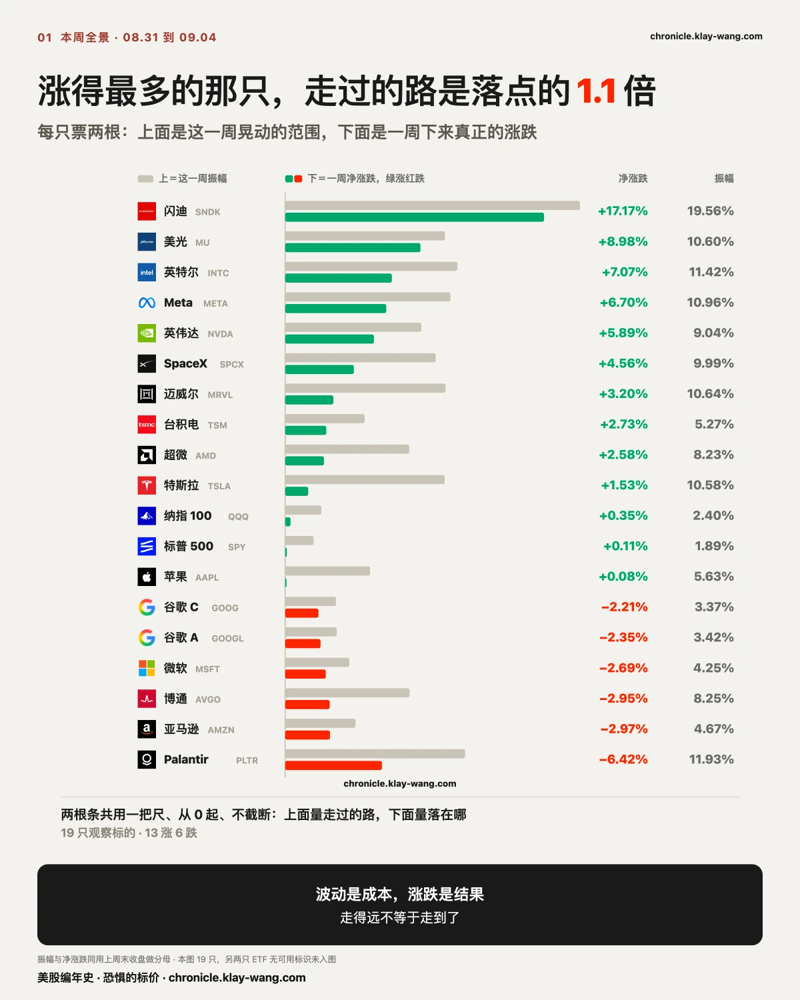
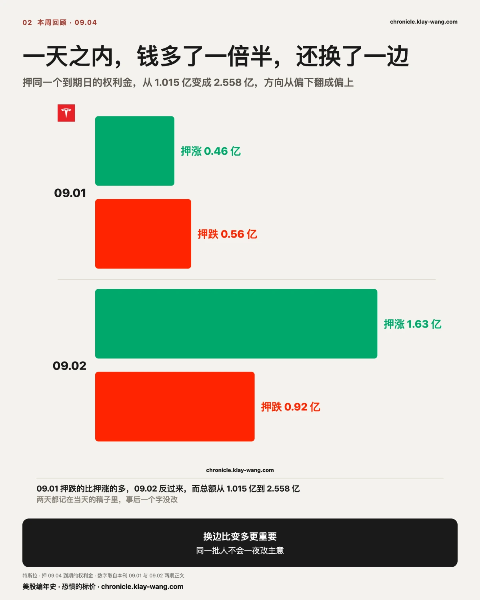
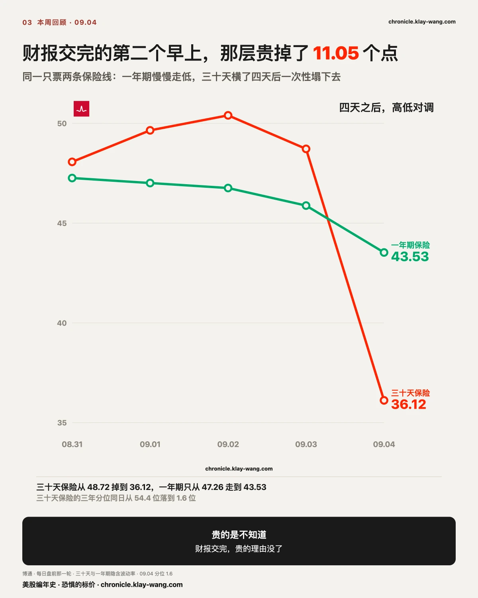
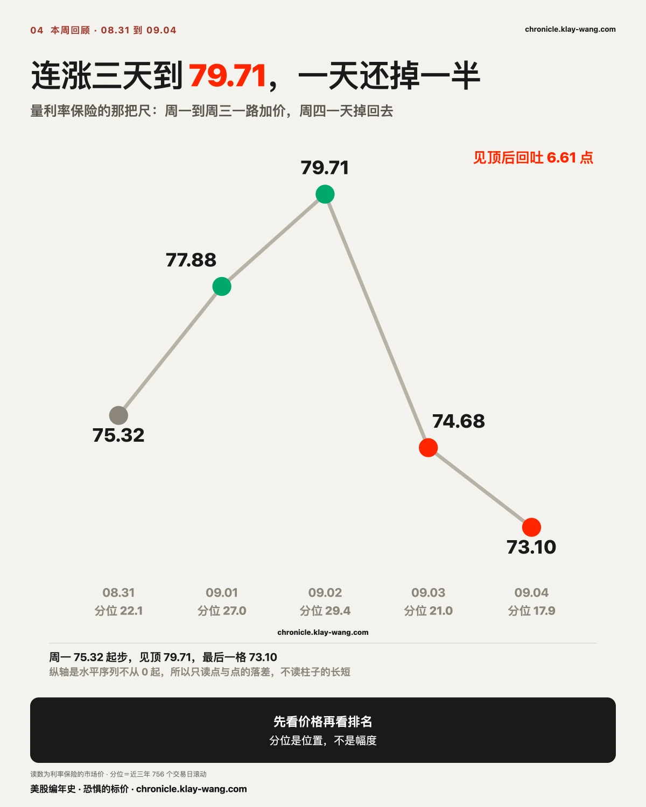
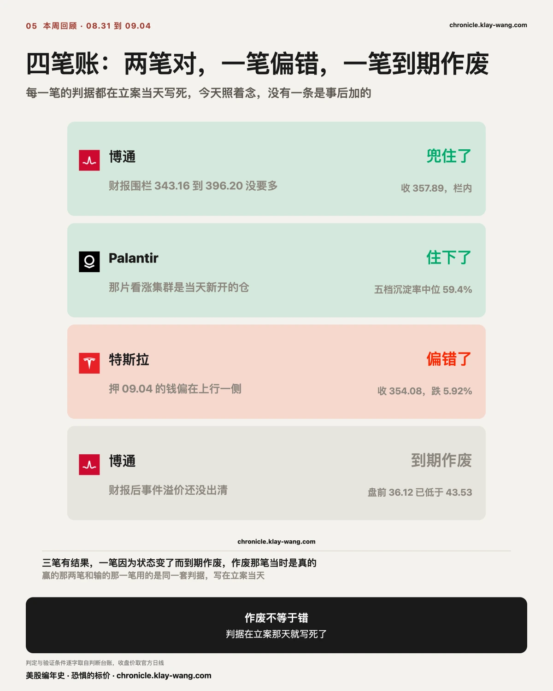
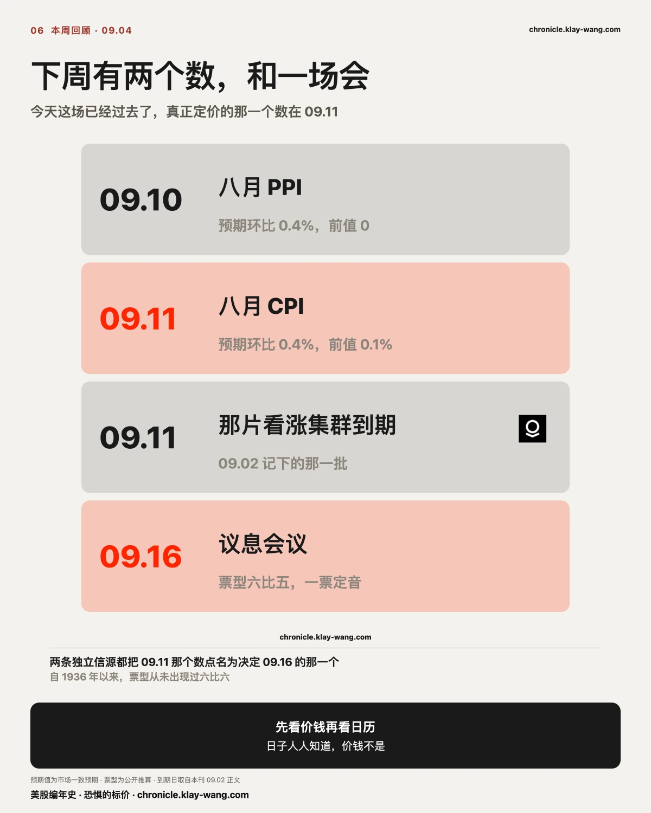
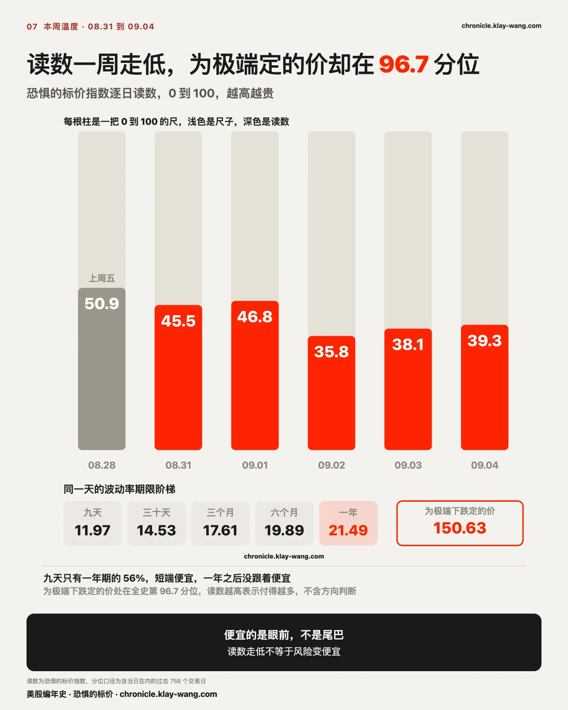

先把结论放前面：这一周指数几乎没挪窝，底下已经换过一轮血。
标普 500 净涨 0.11%，振幅 1.89%；纳指 100 净涨 0.35%，振幅 2.40%。只看这两行，像是一周什么都没发生。
底下完全是另一幅样子。17 只个股的振幅中位数 9.04%，接近标普的五倍。最强的闪迪一周涨 17.17%，最弱的 Palantir 跌 6.42%，两头差了 23.6 个点。
涨得最多的四只是闪迪、美光、英特尔、Meta；跌得最多的四只是 Palantir、亚马逊、博通、微软。存储那几只在往上走，几只大型软件和云在往下走。
指数几乎不动，只说明涨的和跌的刚好互相抵消。这一周该发生的都发生了，只是没有落在指数上。
再看走过的路和最后的落点差多少。SpaceX 一周晃了 9.99%，落在 +4.56%；特斯拉晃了 10.58%，落在 +1.53%；迈威尔晃了 10.64%，落在 +3.20%。这三只走过的路都是落点的两到三倍。翻译成大白话：开车绕了三十公里，最后离家只有十公里。拿着它们的人这一周账面上的颠簸，远大于最后到手的那一点。
所以这一周从指数看是平的，从个股看是分化很凶的。下周 CPI 之前，这个分化收不收得回来，比指数本身更值得盯。
本周涨幅前两名是闪迪 +17.17% 和美光 +8.98%。它们同时也是这一周异动权利金的第二和第三名，10.95 亿和 8.30 亿。
先看这些钱是什么时候到的。
闪迪 09.03 收涨 0.10%，几乎没动，当天的异动权利金从前一日的 0.04 亿跳到 1.97 亿，看涨占 75.2%。第二天它涨 11.90%，权利金 6.11 亿，看涨占 92.5%。
美光 09.03 收涨 0.22%，同样几乎没动，权利金从 0.34 亿跳到 4.16 亿，看涨占 85.3%。第二天涨 6.10%，权利金 6.34 亿，看涨占 92.3%。
两只票在同一天出现权利金跳量级，而当天股价几乎不动；第二天双双大涨。
这件事我只记录，不解释成有人提前知道了什么。财报日程、板块轮动、卖方对冲都会留下同样的形状，光看权利金分不出是哪一种。能记下来的部分只有：钱先到，价后动，中间隔了一个交易日。
再看 09.04 那天的盘面。当天标普跌 0.39%，纳指 100 涨 0.18%，而十只半导体与存储股全部收涨，中位 +4.53%；九只大型软件与消费股里八只收跌，中位 −2.04%。两组中位数差 6.57 个点。
非农超预期三倍的那一天，指数在跌，钱跑去了半导体。
拉到一整周也是同一个方向：半导体与存储中位 +5.67%，大型软件与消费中位 −2.35%。上面那张全景图里最强与最弱差 23.6 个点，来源就在这里：两组人朝相反方向走，中间就拉开了这么远。
这条读法可以被推翻，条件写在这里：如果下周半导体这组回吐、大型软件那组补涨，那这一周的分化就只是财报与日程造成的一次错位，上面这段要重写。
08.27 特斯拉收 354.81。当天异动表里九个行权价一起冒出来，到期日都是 09.04，其中 372.5 那一档的成交量是前一天存量的 19.77 倍。
接下来五天，押在这个到期日上的钱做了一件不常见的事：一天之内翻了个面。
09.01，押 09.04 到期的钱一共 1.015 亿，押跌的 5559 万多过押涨的 4586 万，重心在下跌一侧。
09.02，同一个到期日，钱从 1.015 亿涨到 2.558 亿，方向也调了头，押涨的 1.634 亿对押跌的 9235 万。一天进来 1.5 亿新钱，几乎全压在上行那一侧。
09.03，九档里八档的到期价值已经超过当初付出去的钱，只有最高的 375 那一档还差 92 美元。
看到这一步，押上行的那 1.5 亿是赢的。
今天到期。收 354.08。
九档全部到期，一档也没回本。
九个行权价里三档进了价内，其余六档归零。把当初每张付出去的钱摆进来：
| 行权价 | 当初每张付 | 到期值 | 结果 |
|---|---|---|---|
| 345 | 1432 | 908 | 亏 524 |
| 350 | 1113 | 408 | 亏 705 |
| 352.5 | 963 | 158 | 亏 805 |
| 355 | 843 | 0 | 全没了 |
| 357.5 | 711 | 0 | 全没了 |
| 360 | 630 | 0 | 全没了 |
| 370 | 325 | 0 | 全没了 |
| 372.5 | 269 | 0 | 全没了 |
| 375 | 229 | 0 | 全没了 |
昨天这张表上八档已经覆盖成本，今天九档一档都没有。 中间只隔了一个交易日，股价从 376.37 掉到 354.08。
345、350、352.5 三档确实进了价内，但把当初付出去的钱摆回来，这三档一样是亏的。到期日不给面子，时间价值当天归零，剩下的只有收盘价减行权价那一块，而那一块要先够得着当初付的钱，才轮到谈赚。
09.02 那天一天涌进 1.5 亿、方向从跌翻到涨，看上去像是有人提前知道了什么。四天后九档全部归零。
成交额只能说明当天有多少钱在换手，说明不了有多少钱愿意留到开奖那一刻。 这两件事平时长得很像，只有到期日能把它们分开。
这把尺下周还要用一次：押 CPI 那天的 5.58 亿看涨，是换手还是下注，09.11 会自己给答案。

财报之前，期权市场给博通标了一个价：财报当晚最可能的波动幅度是上下 7.17%。把这个幅度套在财报前一天的收盘价上，得到一条从 343.16 到 396.20 的走廊。
这条栏本周走完了全程，四天四个状态：
09.02 标价。当天收 368.31，30 天保险 50.40，一年期 46.76，倒挂 3.64。全组 21 只里只有它一只倒挂。
09.03 摸穿。开在 351.74，最低到 342.331，比走廊下沿低 0.829 美元，收在 357.16 回到走廊里。当天收跌 2.74%，是 21 只里唯二收跌的一只。判据只认收盘价，所以这一趟不算冲破。
09.04 盘前，溢价塌了。30 天保险从 48.72 掉到 36.12，一年期 43.53。倒挂反过来了，从高出 2.84 变成低了 7.41。而它的 30 天保险分位，从 54.4 位掉到 1.6 位，是一年里最便宜的位置。
财报前那层贵，贵的是不知道；财报交完，不知道没了，贵的理由也就没了。
这句话听起来像常识，但本周这四天把它变成了可以对账的数字，值得拆开看。一年期那条线，四天里从 47.65 一路走到 43.53，跌了 4.12 点，走得又慢又稳，它量的是这家公司未来一年的不确定性，财报只是其中一件事，所以它不会因为一个晚上就改主意。30 天那条线不一样，它在 48 到 50 之间横了四天，然后在财报交完的第二个早上一次性掉到 36.12。同一只票、同一天、两条线，一条几乎没动，另一条塌了一大截，中间那块差价就是事件本身的价钱。
它有多贵，也是能算的。09.02 那天两条线的差是正的 3.64，到 09.04 盘前变成负的 7.41，两天之间挪了 11.05 点。买在 09.02 的人，就算方向猜对、合约进了价内，也要先赚回这 11 点才轮到赚钱。 方向对了不等于钱赚了，中间隔着一个成本，这一周把这句话摆成了一个可以数出来的数字。
分位那一栏把这件事说得更直白。30 天保险的分位从 54.4 位掉到 1.6 位，便宜到一年里几乎没有比它更便宜的时候。 市场对这家公司的长期看法没有变（一年期那条线还在 43.53），变的是它认为最近这一个月里已经没有什么要开奖的事了。
这条读法可以被推翻，条件写在这里：如果下周它的 30 天保险在没有新事件的情况下自己涨回 45 以上，那就说明塌下去的不只是事件溢价，还有别的东西被一起定价了，上面这段整个要重写。
收 357.89，落在栏里，这道栏兜住了。
盘前标好的走廊是 343.16 到 396.20，今天它在里面收盘。09.03 那天盘中最低到 342.331、比下沿低 0.829 美元，但判据只认收盘价，所以那一趟不算冲破，今天这一收才是定案。
一句话说清这道栏赢在哪：财报当晚市场要价上下 7.17%，事后回头看，它没有要多。 那个价钱是在事情发生之前标的，我们也是在事情发生之前把它印出去的。

这一节我把判断放在最前面：市场并没有在认真交易加息这条线，至少这一周没有。
数字全站在加息那边，三个价格却一个都没动。先看那把量利率保险的尺，本周走成这样：
周一 75.32、周二 77.88、周三 79.71、周四 74.68。
连涨三天到周三见顶，周四一天跌 5.03 点，跌幅 6.31%。 把窗口拉长看，那一轮从 08.26 的 69.44 一路涨到 79.71，一共 10.27 点，周四一天还掉了其中的 49%。
加息的故事讲到第三天，愿意为它多付钱的人还是没出现。故事在涨，价钱没跟上。
今天早上非农给了 16.2 万，市场预期是 5.6 万；七月那个减 2.3 万还被上修成加 2.1 万。公开报道说，数据出来后交易员把 9 月加息概率从五成多押到六成以上。
所以今天这把尺怎么走，是本周最后一个真问题：数据全站在加息那边之后，买保险的钱来了没有。
把这一周连起来看：周一 75.32、周二 77.88、周三 79.71 见顶、周四 74.68、周五 73.10。给利率买保险的价钱涨到周三就停了，然后连跌两天。 周五这一天尤其干净：非农是预期的近三倍、前值还被上修，而这个价钱不但没涨，还掉进了近三年最便宜的那两成里。
市场为加息做了什么准备？不用听谁说，看三个价格就够了。
一，短期国债今天几乎没动，跌 0.02%。 这是最该有反应的那一段。如果市场真觉得马上要加、而且会加得比现在想的更狠，最先被卖掉的就是它。它没被卖。
二，长期国债不但没跌，还涨了 0.17%。 一个真担心利率失控的市场，不会在非农这么强的一天去买长债。
三，给利率买保险的价钱又便宜了一天。 今天 73.10，昨天 74.68，周三还是 79.71。它现在处在近三年最便宜的那两成里。 同一天黄金跌 0.84%、白银跌 1.21%、美元涨 0.25%，风险资产那头按利率要往上在动。
三样指向同一件事：市场早就为加息做过准备了。它现在的判断是账已经算完，不需要再花钱加保护。
这不等于不会加息。 09.16 真加了，上面那句照样成立：一件早就算进价格里的事情发生，本来就不需要新的保险。会推翻它的是另一种走法：加了之后债券开始大跌、保险价钱突然跳上去。那说明这个市场之前算错了账，而我们跟着算错。
保险便宜说的是近期不会大起大落，与会不会出事是两回事。 同一天，股市里为万一崩盘付的那笔钱，贵到历史最高的百分之三里。眼前便宜，尾巴不便宜。
这条读法可以被推翻，条件写在这里：如果下周 CPI 之后这把尺明显抬起来，那就说明市场之前只是没把非农当成新消息，而不是不愿意为利率风险付钱，上面这段要重写。

本周四笔账，两笔对、一笔偏错、一笔到期作废。错的那笔我照样摆出来，作废的那笔更要说清楚，因为它最容易被当成错。
对的两笔。 博通那道栏，09.02 写下 343.16 到 396.20，今天收 357.89，落在栏里，市场事先要的那个价没有要多。Palantir 那片 09.11 到期的看涨集群，09.02 写下它是当天新开的仓而不是旧仓换手，第二天早上五个价位的沉淀率全为正、中位 59.4%，新仓住下了。
偏错的那一笔。 09.02 立案：押 09.04 到期的 2.558 亿里，看涨 1.634 亿对看跌 9235 万，钱偏在上行一侧。今天它收 354.08，跌 5.92%。钱多的那一侧输了。 我们记下的是钱押在哪边，不是它会赢。但那天既然写了偏在上行，今天就得认这一笔偏错了。
到期作废的那一笔，和错是两回事。 09.03 写的是博通的事件溢价还没出清，30 天 48.72 高于一年期 45.88。验证条件当天就写死：下一期盘前若转到一年期下方即到期作废。今天盘前 36.12 对 43.53，转下去了。那句话在写下的那一刻是真的，今天只是不再适用。
分清这两件事有实际用处：错了要复盘，作废不用。把两者混成一栏，记分牌就会好看或难看得莫名其妙。

下周最重要的事只有一件：CPI。 但比猜它开多少更值得看的，是钱已经押到哪一边了。
先把日历摆出来：
09.10 八月 PPI，市场预期环比 0.4%，前值 0%。
09.11 八月 CPI，市场预期环比 0.4%，前值 0.1%。这是两条独立信源都点名的那一个数。
09.11 Palantir 那片看涨集群到期。
09.16 议息会议。票型六比五，加息概率今天之后到了六成以上，鲍威尔已卸任主席仍任理事，他那一票是变量。自 1936 年以来从未出现过六比六。
四件事里，真正能改写这一周结论的只有 09.11 那一个。
本周三个价格给出的读法是：市场认为利率这笔账已经算完，不需要再花钱加保护。非农是预期的近三倍都没能推翻它。CPI 是下一个、也是这个月最后一个能把它推翻的东西。
而押在 CPI 那天的钱，方向已经很清楚。09.04 收盘这一轮，到期日落在 09.11 的异动合约一共 7.08 亿美元，看涨 5.58 亿对看跌 1.50 亿，看涨占 79%。17 只标的里 15 只偏多：苹果 98% 押涨，闪迪 85%，美光 83%，特斯拉 70%，英伟达 68%。
说白了就是：嘴上都在担心通胀，真金白银却押在上涨那一侧。
这里有一个本周刚刚被走过一遍的教训。09.02 押特斯拉 09.04 到期的钱，1.634 亿看涨对 9235 万看跌，比例和现在这批很接近，最后九档全部归零。成交额大不等于筹码留得住。
所以我下周不会花时间猜 CPI 开多少。我只看一件事：这 5.58 亿看涨的钱，会不会留到 09.11。 越靠近 CPI 持仓还在加，说明有人真在押；成交热闹而隔夜持仓掉下去，那就只是当天的换手。
另外，79% 站在同一边，这件事本身下周会有代价。CPI 要是开反了，最先动的是这批钱的仓位：站同一个方向的人越多，同一时刻抢着出场的人就越多，价格要走的路也就越长。至于 CPI 会开多少，我不猜。这里只说一件事：万一开反了，动静会比平常大。
盯法同样不用等评论：CPI 出来那天，看给利率买保险的价钱抬不抬。 抬起来，说明市场之前漏算了，本周这段读法要重写；继续躺在近三年最便宜的两成里，说明账真的算完了，09.16 加不加都只是走个流程。
09.11 同一天还有第二件事开奖：Palantir 那片看涨集群到期。它是本周记分牌上住下的那一笔，下周会自己给出结果，赢输都照原样记上去。
至于 09.16 的六比五，票型本身不用提前猜。值得记的是另一件事：真出现六比六，就是 1936 年以来第一次。

恐惧的标价指数（Fear-Price Index）· 2026-09-04 · 读数 39.3/100：一年期波动率 VIX1Y 为 21.49，处于近三年第 39.3 百分位，高即贵。逐日台账与口径 → chronicle.klay-wang.com · 转载注明：恐惧的标价指数 · Market Chronicle

这一周短端的故事一直在变响：加息概率从五五开推到六成以上。而买一年期保险的价钱停在近三年第 39.3 位，既不贵也不便宜。
短端在为一场会定价，远端没有跟着改主意。 这两件事同时成立，说明市场把 09.16 当成一个日程而不是一次转折。要推翻它很简单：如果下周 CPI 之后一年期的读数明显抬上去，那就是远端也改口了，上面这句作废。
一，故事变响不等于有人付钱。 非农是预期的近三倍、加息概率被推到六成以上，而短期国债当天几乎没动、长期国债还涨了 0.17%，给利率买保险的价钱又便宜了一天。市场早就把这件事算进价格了。
二，方向对了不等于钱赚了。 博通的事件溢价两天里挪了 11.05 点，买在标价那天的人就算方向猜对、合约进了价内，也要先赚回这 11 点才轮到谈赚。特斯拉那九档给的是同一课：三档进了价内，一档都没回本。
三，指数不动不等于什么都没发生。 标普一周净涨 0.11%，底下 17 只个股的振幅中位数是它的 4.8 倍，最强与最弱差了 23.6 个点。平静的是指数，不是市场。